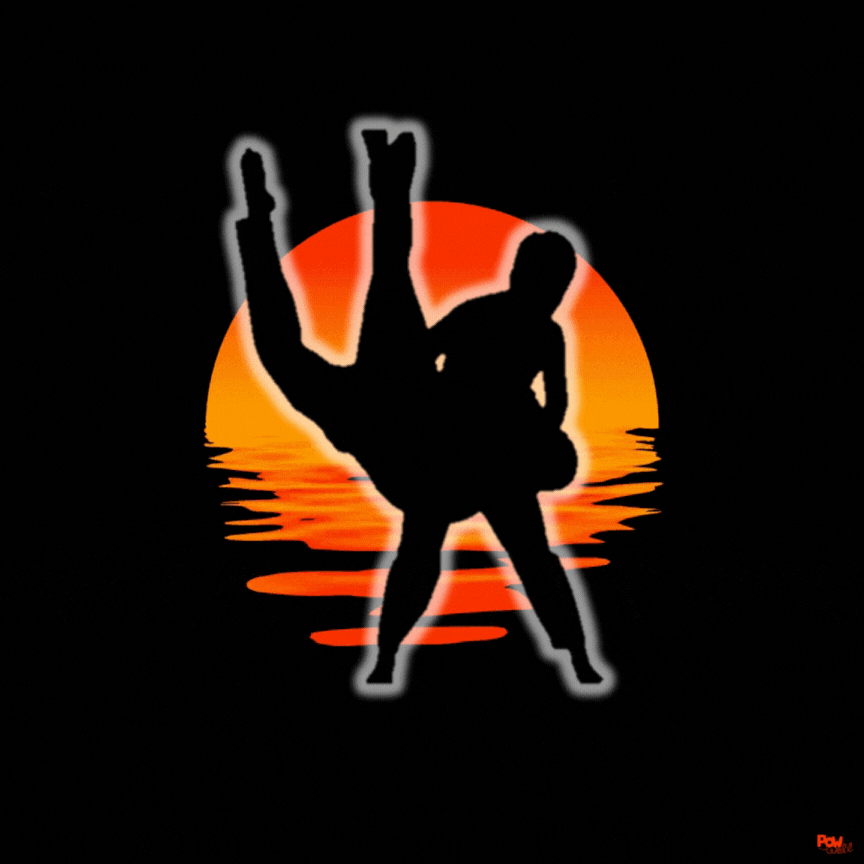
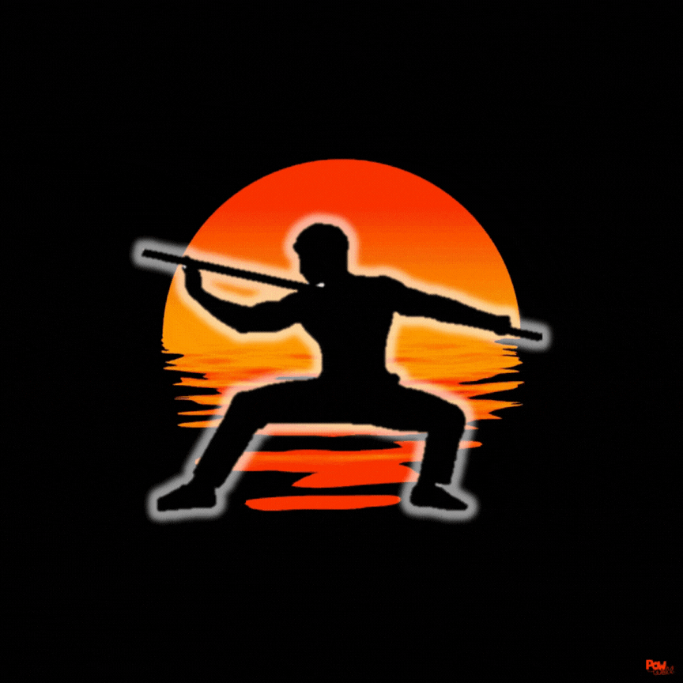
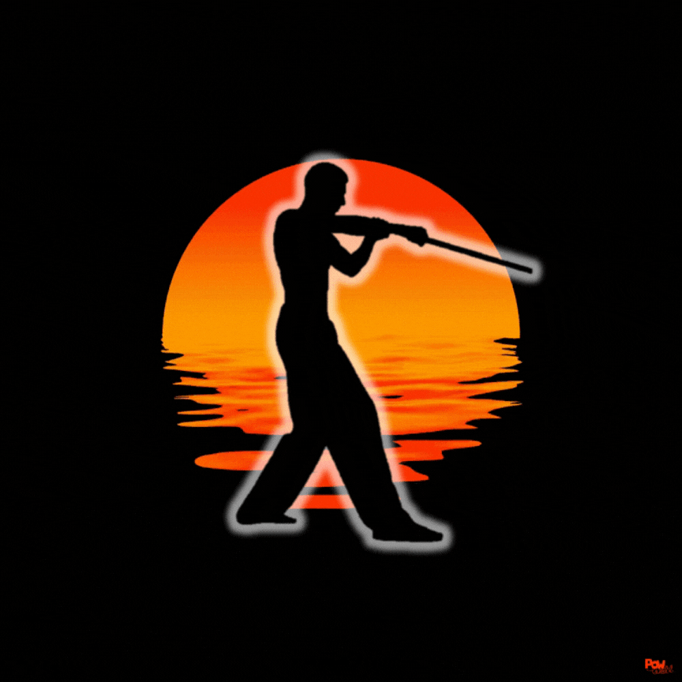

ARTES MARCIALES
Dentro de TAEYANG se enseñan cinco artes marciales provenientes de Corea. Cada una cuenta con tradiciones, raíces y una sede que rige su práctica a nivel internacional.



HAPKIDO
Defensa personal con llaves, proyecciones y control del oponente.

SEDE BONGSUL
BONGSUL
Manejo tradicional del bastón largo coreano.

SEDE KUMDO
HAEDONG KUMDO
Arte marcial coreano enfocado en el manejo de la espada.